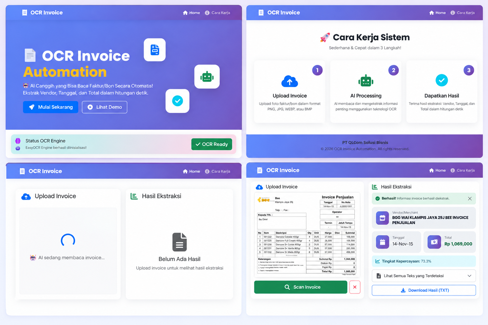

OCR Invoice Automation
Automated Document Intelligence & Receipt Entity Extraction System

OCR Invoice Automation adalah solusi Artificial Intelligence dan Computer Vision yang dikembangkan untuk mengotomatisasi proses pembacaan, digitalisasi, dan ekstraksi data dari dokumen faktur (invoice) serta struk transaksi (receipt) secara cepat, presisi, dan terstruktur.
Sistem ini mentransformasikan dokumen gambar yang tidak terstruktur menjadi data siap pakai untuk operasional keuangan dan akuntansi. Dengan mengintegrasikan pipeline Computer Vision berbasis OpenCV dan deep learning OCR engine berbasis EasyOCR / PyTorch, sistem mampu mendeteksi serta mengekstrak entitas penting seperti nama vendor/merchant, tanggal transaksi, dan total nominal belanja secara otomatis tanpa intervensi manual.
- Proses Input Manual yang Lambat & Repetitif: Pencatatan transaksi dari tumpukan invoice fisik/foto memakan waktu operasional staf keuangan secara signifikan.
- Tingginya Risiko Human Error: Kesalahan input nominal, tanggal, atau nomor transaksi pada sistem pencatatan keuangan manual dapat menyebabkan inkonsistensi pembukuan.
- Variasi Kualitas & Format Dokumen: Struk belanja dan invoice memiliki format tata letak yang sangat beragam, orientasi miring, kontras rendah, atau terdapat noise visual.
- Kekhawatiran Privasi & Penumpukan Storage: Penyimpanan gambar nota sensitif dalam jangka panjang rentan risiko kebocoran data dan membebani kapasitas server.
Alur kerja pemrosesan invoice dirancang secara efisien dari input mentah hingga output terstruktur:
- 1. Upload Invoice / Receipt: Pengguna mengunggah gambar faktur atau struk transaksi dalam berbagai format (JPG, PNG, PDF).
- 2. Image Preprocessing (OpenCV): Gambar diproses melalui tahapan grayscale conversion, contrast enhancement, adaptive thresholding, dan noise filtering untuk memaksimalkan keterbacaan teks.
- 3. Deep OCR Inference (EasyOCR / PyTorch): Teks dalam dokumen dideteksi dan dibaca baris per baris menggunakan model neural network berkemampuan multikarakter.
- 4. Entity Extraction & Parsing: Algoritma regular expression (Regex) cerdas dan rule-based heuristics memetakan entitas kunci (Vendor Name, Transaction Date, Grand Total).
- 5. Confidence Scoring & Structuring: Hasil ekstraksi dinilai tingkat keyakinannya (confidence score) dan diformat ke dalam skema JSON/tabel terstruktur.
- 6. Export & Auto-Purge: Pengguna dapat mengekspor rekap data ke CSV, melihat riwayat riil, dan sistem secara otomatis menghapus (auto-purge) file gambar fisik untuk menjaga privasi data.
- Upload Invoice / Receipt: Antarmuka upload yang intuitif dengan preview gambar langsung sebelum dilakukan analisis.
- AI OCR Document Reader: Pembacaan teks dokumen menggunakan model EasyOCR yang tangguh terhadap variasi jenis font dan orientasi teks.
- Ekstraksi Otomatis Entitas Kunci: Pengenalan otomatis terhadap Merchant/Vendor, tanggal transaksi, dan total tagihan (Grand Total).
- Advanced Image Preprocessing: Optimalisasi gambar menggunakan OpenCV (denoising, binarization, contrast adjustment) guna menghasilkan akurasi OCR tertinggi.
- Confidence Score Indicator: Menampilkan skor keyakinan hasil ekstraksi untuk memberikan transparansi pada staf verifikator.
- Extraction History Management: Riwayat pemrosesan dokumen tersimpan rapi untuk kemudahan penelusuran dan audit trail.
- Export Data ke CSV: Kemudahan ekspor seluruh hasil ekstraksi ke format CSV untuk integrasi instan ke Excel atau sistem ERP.
- Auto-Purge Security Mechanism: File gambar asli dihapus secara otomatis dari storage server setelah proses ekstraksi selesai untuk menjaga privasi data finansial.
- Efisiensi Waktu hingga 85%: Proses rekapitulasi data invoice yang sebelumnya memakan waktu berjam-jam kini selesai dalam hitungan detik.
- Akurasi Finansial Terjamin: Kombinasi preprocessing OpenCV dan parsing Regex meminimalkan kesalahan ketik nominal transaksi secara drastis.
- Kepatuhan Privasi Data: Kebijakan auto-purge memastikan data visual sensitif klien tidak tersimpan tanpa izin di server.